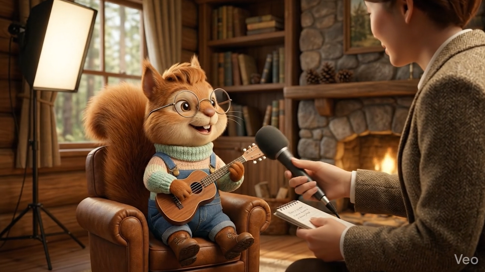
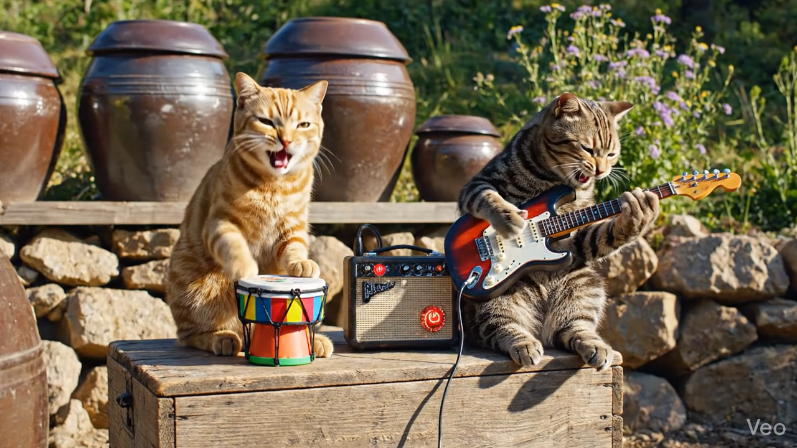

01
기획부터 발행까지 풀 프로세스
아이데이션 → 캐릭터 디자인 → 이미지/영상 생성 → 후반 편집 → 썸네일까지, 실제 콘텐츠가 만들어지는 전 과정을 한 번에 경험합니다.
한국콘텐츠진흥원이 지원하고 제주대학교가 수행하며 위니브에서 강의하는
2026 AI특화 콘텐츠 창작자 양성 사업은
생성형 AI를 활용해 콘텐츠를 직접 기획·제작하는 실력 있는 창작자를 키우기 위한 무료 교육 프로그램입니다.
아이데이션 → 캐릭터 디자인 → 이미지/영상 생성 → 후반 편집 → 썸네일까지, 실제 콘텐츠가 만들어지는 전 과정을 한 번에 경험합니다.
제주 관광·브랜드·캐릭터를 주제로 실제 사용할 수 있는 콘텐츠를 만듭니다. 로컬 콘텐츠 기업 실무진의 직접 피드백으로 마무리합니다.
이론 강의에 머물지 않고, 25차시 동안 결과물을 쌓습니다. 마지막엔 본인의 포트폴리오로 남는 숏폼 영상을 발표합니다.
주말반 / 평일반 / 평일 저녁반 등 5개 트랙으로 운영됩니다. 모든 트랙은 75시간 커리큘럼을 다루며, 트랙당 40명 내외로 선발합니다.
AI 기초부터 실전 영상 제작까지, 매 차시 결과물이 쌓이는 실습형 커리큘럼입니다.
제주 콘텐츠 산업 분석, 생성형 AI 작동 원리, 최신 AI 도구 비교, 윤리 / 저작권 이슈.
제주 콘텐츠 사례 기반 디자인 사고 훈련, AI를 활용한 아이디어 확장과 기획 고도화.
캐릭터 기획 프로세스, 프롬프트 설계, 다각도/표정 통일, AI 캐릭터 디자인 실습.
프롬프트 기반 이미지 생성, 스타일 변환·디테일 보정, 결과물 품질 향상 전략.
광고/홍보 영상 사례, 스토리보드와 컷 구성, 최신 AI 비디오 모델 기반 제작 실습.
AI TTS 더빙, 자동 자막 스타일링, Suno 기반 제주 감성 BGM 생성 실습.
앞서 만든 AI 캐릭터를 활용한 숏폼 튜토리얼, 시각적 연출 심화.
'터지는 썸네일' 구조 분석, ChatGPT 카피라이팅, Canva 활용 A/B 테스트 시안.
자유 주제 선정, 기획-생성-편집-썸네일 풀 프로세스 실전 영상 제작 실습.
제주 로컬 콘텐츠 기업 대표 및 실무진과 함께하는 발표 / 피드백 세션.
교육 기간 동안 AI 영상·이미지 등 다양한 콘텐츠를 직접 제작합니다. 마지막에는 본인의 작품으로 남는 AI 숏폼 영상을 발표하며 마무리합니다.
수업에서는 영상·이미지뿐 아니라 코드로 3D 캐릭터를 만드는 과정도 함께 다룹니다. 마우스 드래그로 회전, 휠로 확대·축소해 보세요.


콘텐츠 기획·제작·유통에 AI를 활용하고 싶은 현업 창작자와 예비 창작자 모두 지원할 수 있습니다.
※ 교육생은 1개 트랙에만 참여할 수 있습니다. 신청은 본인의 일정에 맞는 트랙 1개만 선택해 주세요.
네, 한국콘텐츠진흥원의 국고보조금 100%로 운영되어 교육생 부담은 0원입니다. 실습 도구·재료 등도 별도 부담 없이 진행됩니다.
네, 수료자에 한해 수료 후 지원됩니다. 각 과정에서 사용하는 AI 도구의 학습 기간(개월 수)만큼 구독료가 지원되는 구조입니다.
예를 들어 Gemini를 1개월간 다룬다면 Gemini 1개월 구독료, Kling을 1개월간 다룬다면 Kling 1개월 구독료가 지원됩니다.
수강생이 먼저 본인 명의로 결제한 뒤, 수료 확인 후 환급 형태로 지원되니 결제 영수증을 보관해 주세요.
가능합니다. 콘텐츠 기획·창작·유통에 AI를 활용하고 싶은 현업 창작자와 예비 창작자(취·창업 준비생, 대학생 등) 모두 지원할 수 있습니다. 1~3차시에서 AI 기초부터 함께 다룹니다.
오프라인 교육이 중심입니다. LMS VOD 형태로 일부 콘텐츠를 병행 제공하는 방안을 검토 중이며, 최종 운영 방식은 트랙별 안내를 통해 공지됩니다.
아니요. 교육생은 1개 트랙에만 참여할 수 있습니다. 본인의 일정에 가장 잘 맞는 트랙 1개를 선택해 신청해주세요. 만약 중복 선발될 경우, 한 트랙을 선택해 등록하시면 됩니다.
전체 교육 시간의 70% 이상 이수가 기본 기준입니다. 실습 과제 70% 이상 제출, 팀 프로젝트 제출 등 일부 활동도 출석 시간 일부로 인정될 수 있습니다.
3D 캐릭터 1종, 콘텐츠 기획 문서, AI 이미지·카드뉴스, 그리고 최종 포트폴리오로 15~60초 분량의 AI 숏폼 영상을 제작합니다. 마지막 차시에서는 제주 로컬 콘텐츠 기업 실무진의 직접 피드백을 받을 수 있습니다.
5개 트랙 중 본인의 일정에 맞는 트랙을 선택해 신청해주세요.
각 트랙 카드의 접수하기 버튼을 통해 Google Form으로 연결됩니다.